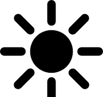
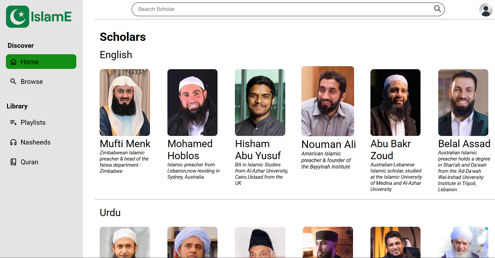

Dark mode

Dark mode
My Projects
Featured Project

IslamE
Islamic Learning Platform
This is an Islamic educational website where users can learn about Islam from various scholars around the world. Currently, I have developed a Mufti Menk section where users can watch his lectures, and a Nasheed section where they can listen to different nasheeds.
Projects

Calculator
This calculator displays calculations in real time and includes a history feature that lets users view previous calculations.

Clock
This project includes both an analog clock and a digital clock. It has 3 main features of a clock app.Stopwatch,Timer,Set alarm.

Todo
This Project Keep your tasks of any particular day, you can check off any task that you’ve finished and can delete the tasks from previous days.